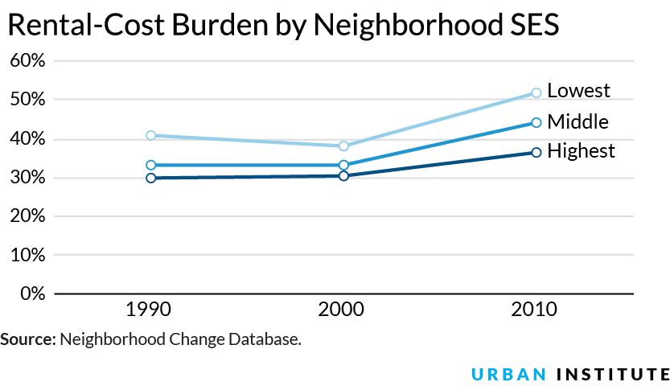
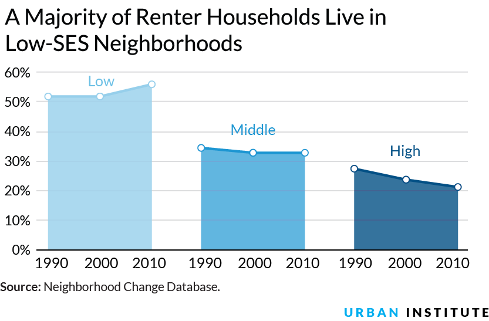
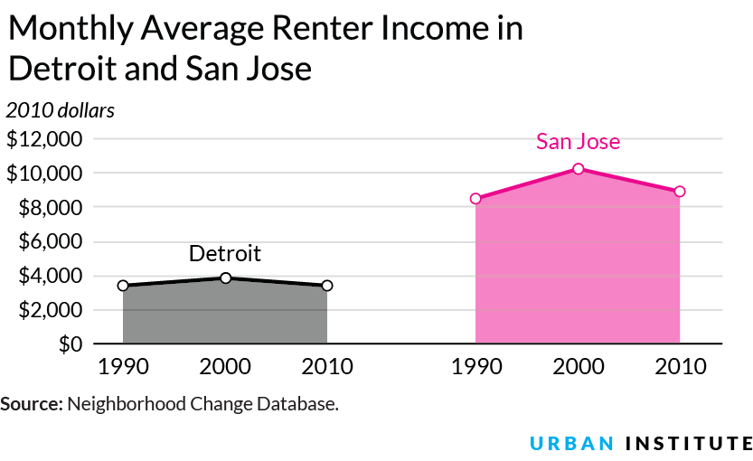
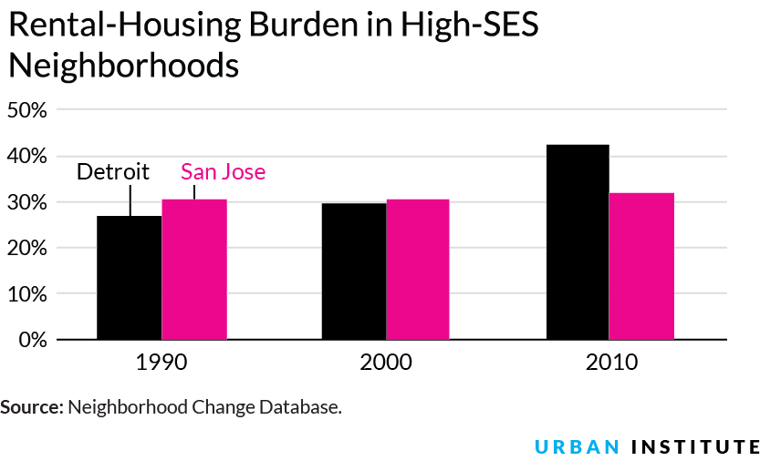

Rent Burden High in Low- and High-Cost Metros Alike

Housing, a cost that nearly every American family has to bear, has become prohibitively expensive for much of the population. In 1990 and 2000, about a third of American renters were cost burdened—defined here as paying more than 35 percent of their income on rent.1 By 2010, that share jumped to 44 percent nationwide and was even higher in some places.
New analysis of data from the Neighborhood Change Database (NCDB) shows how widespread rent cost burdens have become, increasing in poorer neighborhoods and high-cost metros alike.
Though homeowners build equity when housing prices rise, renters face a much different reality: housing price inflation directly affects renters’ ability to spend or save for the future. And unlike homeowners, renters see no return on their dollar.
How Immigrants are Reshaping Residential Segregation
Residential segregation is more than just a black/white story.
1 Other research on this topic has defined rent burden as 30 percent of income. We use 35 percent simply because historic NCDB data is not available at the 30 percent cutoff.


Rent Cost Burdens Are a Problem in All Types of Neighborhoods
Rent burden, an important economic indicator, perhaps as important but not as widely discussed as unemployment rates or gasoline prices, is a function of two components: rents and incomes. Rates of rent burden can go up when rents rise faster than incomes or when incomes fall faster than rents. Looking at the two together, we see that both rents and incomes increased modestly between 1990 and 2000, but between 2000 and 2010, inflation-adjusted incomes fell while rents continued to rise.
In 1990, 41 percent of those living in the lowest–socioeconomic status (SES) neighborhoods were rent burdened, but the highest-SES neighborhoods were not immune. For this study, we focused on the lowest and highest 10 percent of neighborhoods by socioeconomic status and other factors. Between 1990 and 2000, the lowest-SES neighborhoods improved slightly but relapsed significantly in the next decade. By 2010, over half of renters in the lowest-SES neighborhoods and more than a third in the highest-SES neighborhoods were cost burdened.
However, by volume, low-SES neighborhoods have more renters than neighborhoods that rank at the top; and thus a much higher total number of cost-burdened renters. The number of renters in the lowest-SES neighborhoods has risen from 52 percent in 1990 to 56 percent in 2010. On the other end, the number of renters in the highest-SES neighborhoods has fallen from 27 percent in 1990 to only 19 percent by 2010.
In total, 4.8 million of America’s renter households live in low-SES neighborhoods, compared with about half as many, 2.4 million, who live in high-SES neighborhoods.
Inexpensive Housing Isn’t a Renter’s Paradise
It seems fair to hypothesize that high cost burdens disproportionately affect renters in expensive metro areas. NCDB data reveals that this is not the case. Let’s take a look at two cities that illustrate this point.
San Jose is the heart of Silicon Valley, with a strong economy and many high-wage technology jobs. It also has one of the most expensive housing markets in the United States, where the median home sells for almost $649,000 and rents are $1,443 a month. In Detroit, on the other hand, long considered one of the worst housing markets in the country, homes sell for a quarter of San Jose’s median price, at only $158,000, but median rents are a bit more than half, at $884 a month.
In comparing these metro areas, it becomes clear that rent cost burdens are not exclusive to or even necessarily worse high-cost areas. In 1990, the cost burden rates in Detroit and San Jose were 38 and 35 percent, respectively, but by 2010 that number had ballooned in both metros. Detroit now has a considerably higher number of families who are rent burdened (48 percent) than San Jose (40 percent).
The national picture shows similar trends—cost burdens rose 10 percentage points in the past two decades, from 34 percent in 1990 to a 2010 high of 44 percent. Rent burdens are more complex than housing markets. Metro areas with weaker economies tend to have softer housing markets, but weak economies also correlate with lower incomes and higher unemployment, creating a rent burden crisis that’s national in scope.
How is this possible? Rent is only one of the two metrics needed to understand cost burdens, the other is income. In inflation-adjusted 2010 dollars, the average family income in San Jose has historically been higher than in Detroit. That average income dipped slightly between 2000 and 2010 in both cities, which combined with steadily increasing rents to create even higher cost burdens.
The difference in rent cost burdens becomes especially stark when you focus just on the highest-SES neighborhoods in both cities. Detroit is among a small number of metros where income declined in the highest-SES neighborhoods. Rent cost burdens in San Jose’s highest-SES neighborhoods remained relatively flat since 1990, while in Detroit, they grew from 27 percent in 1990 to 42 percent in 2010, nearly as much as the 2010 national average of 44 percent.


The Problem is Clear. What’s the Fix?
Strong metro economies are tied to higher rents, which makes solving the rent burden crisis a complex task for local officials. As research has shown, lower median rents do not necessarily mean lower burdens, and improving a struggling economy is one of the most challenging issues faced by local policymakers.
In high-cost markets, one way to keep burdens from becoming out of control is to make sure the supply of new housing keeps up with demand. For very low-income renters, policymakers should ensure there is enough affordable housing and preserve the existing stock. In low-cost markets, the focus should be squarely on improving the economic reality for very low-income renters. An inexpensive apartment by national standards could still easily be out of reach for someone who is paid a minimum wage or who struggles to secure hours and shifts at their job.
Whether it’s because of an area’s skyrocketing housing costs or its depressed wages, rents have become a burden for families across the country, in poorer neighborhoods and high-rent metros alike.